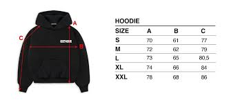
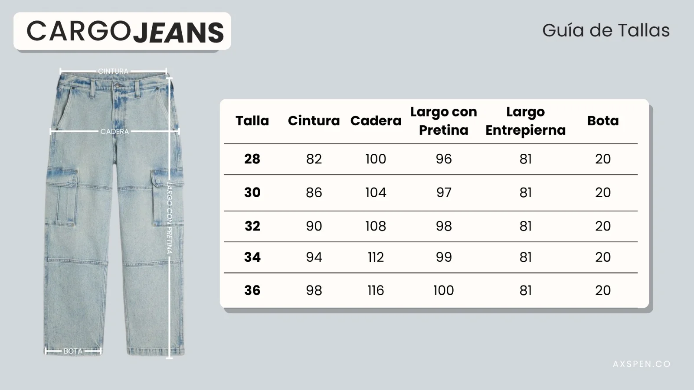
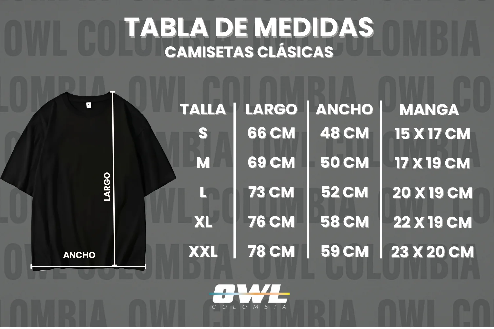
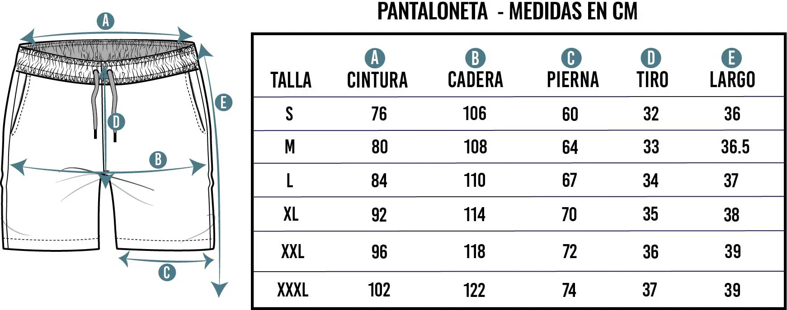

HOODIES
Todos los hoodies son en corte boxy (osea vienen mas cortos pero mas anchos) aconsejamos normalmente pedir una talla mas a la que pide el cliente con normalidad.
Si, se puede decir que viene algo reducida, hay casos en los que hay que pedir hasta dos tallas mas.
VER HOODIESSUDADERAS
Corte de las sudaderas es un corte normal, nacional, lo manejamos por tallas desde la s hasta la xl. manejamos bota ancha porque a quien le gusta andar apretado.
VER SUDADERAS

CAMISAS
El corte de las camisas en un corte oversize donde como se muestra en la imagen, tenemos una caida en los hombros y unas mangas mas largas con respecto a las normales para darle ese toque mas under.
VER CAMISASPANTALONETAS
Igual que las sudaderas, un corte tallaje normal con pantaloneta que llega hasta la rodilla y no te hace sentir apretado, un toque mas fresco y un estilo mas under.
VER PANTALONETAS